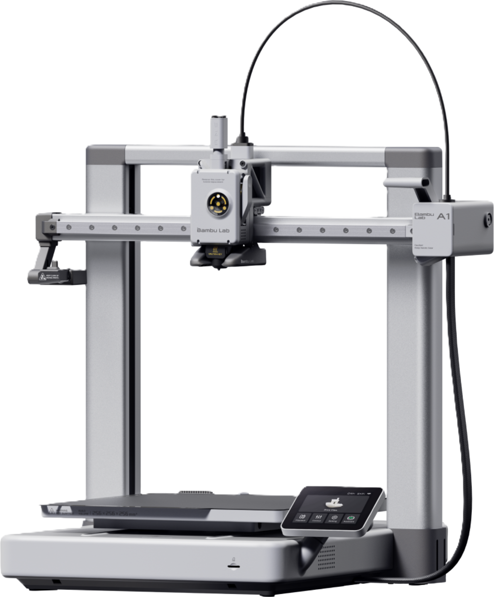

🎓 Parcours BUT GMP
Semestre 1
SAÉ 1.1 à 1.4: Analyse, modification, prototype et interview
Semestre 2SAÉ 2.1 à 2.5 : Processus, implantation, Fabrication, pilotage, securité
Semestres 3 & 4
Prochainement
🚀 Projets Personnels
Fusée de A à Z : Conception, fabrication et assemblage complet d'un prototype de fusée.
 Réparation Pocket Bike
Réparation Pocket Bike
À partir d'une pocket bike non fonctionnelle, j'ai réussi à changer des pièces et à la réparer pour la remettre en marche.

Impression 3D & DIYMaintenance d'imprimante FDM, paramétrage des slicers et conception d'accessoires sur-mesure en PLA et PETG.